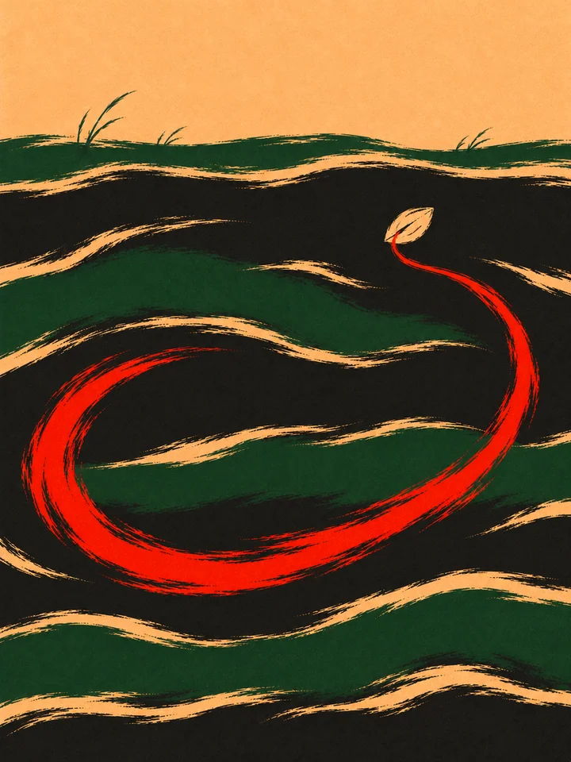

I CHING / 周易
Formula una pregunta, lee tu hexagrama y vuelve a tus consultas en el diario.

Busca una figura y explora su imagen, sus textos y sus líneas.
Conoce los trigramas y prepara tu primera consulta.